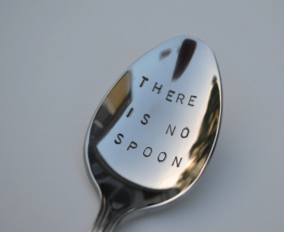

∞
CIRCULAR LOOP
The Matrix is a loop
There is no beginning. There is no end. There is only the loop.
01001100 01101111 01101111 01110000 00100000 01101110 01100101 01110110 01100101 01110010 00100000 01100101 01101110 01100100 01110011
April 19 appears twice. Everything else followed.

"Do not try and bend the spoon — that's impossible.
Instead, only try to realize the truth: there is no spoon."
🍫 → 🐺 → ⬡ → 🌐 → 🍫
← BACK TO THE MATRIX
01001000 01100001 01110000 01110000 01111001 00100000 01000010 01101001 01110010 01110100 01101000 01100100 01100001 01111001